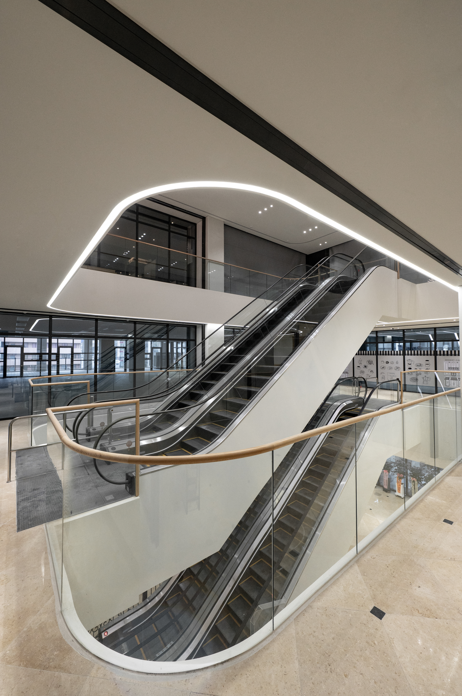
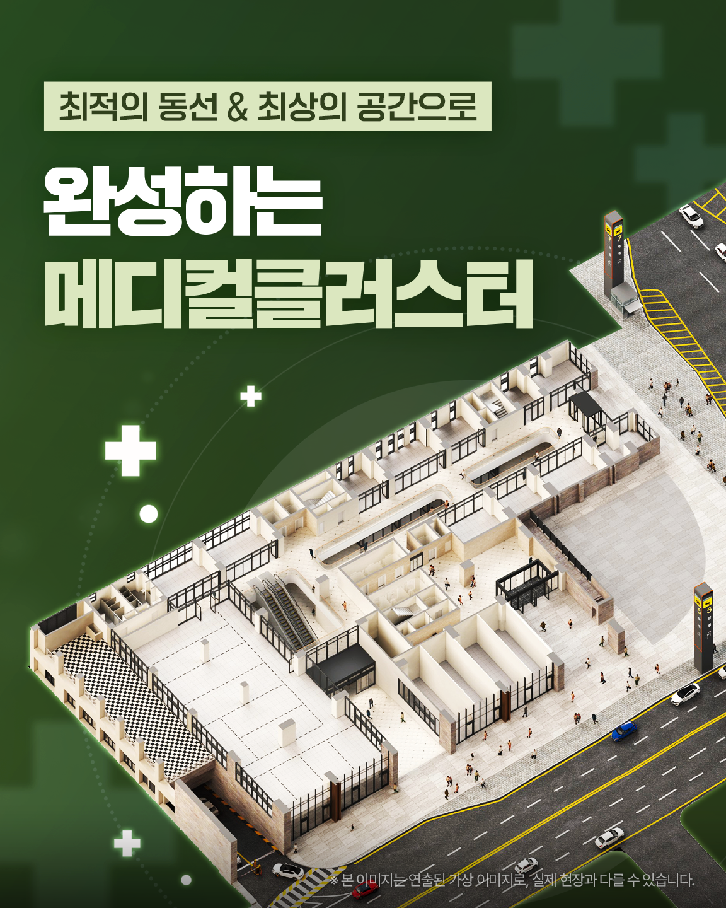
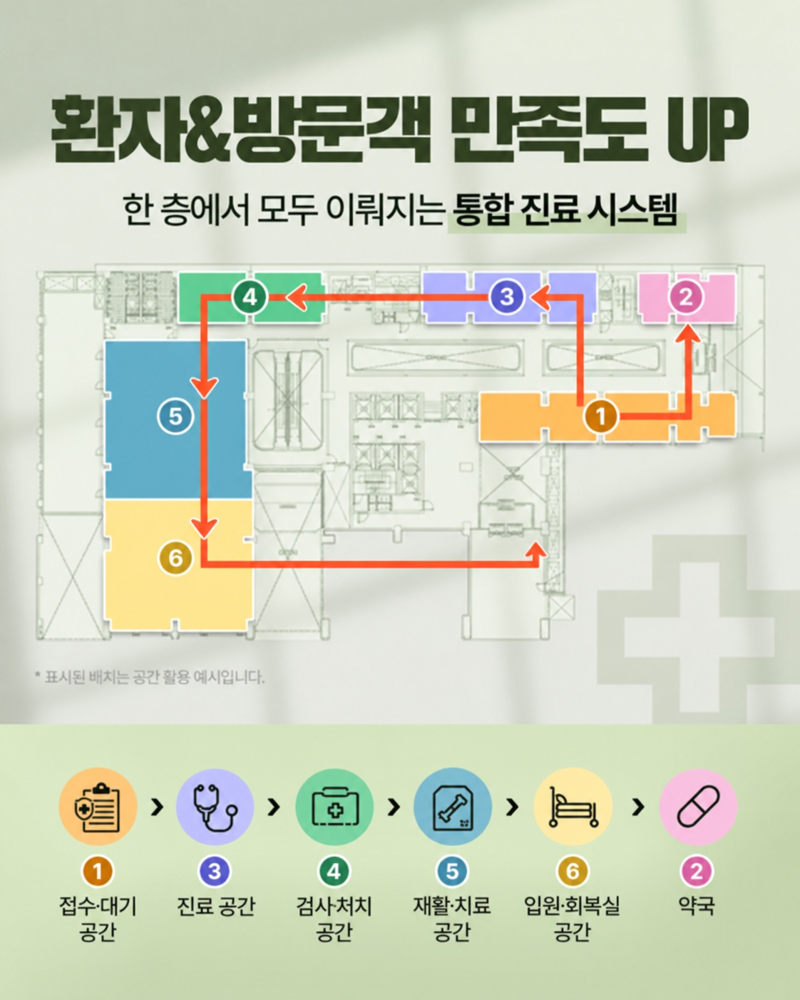
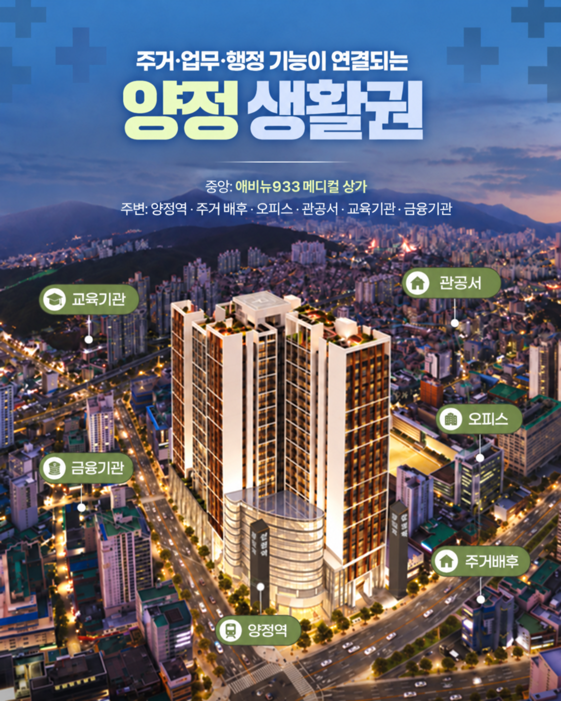

AVENUE 933 · MEDICAL
양정역 직통 연결 1층 메디컬 특화 상가
입점 · 임대 · 매매 상담
※ 상기 이미지는 이해를 돕기 위한 이미지로 실제 현장과 다를 수 있습니다.
MEDICAL POSITIONING
상가의 한 구역이 아니라,1층 전체를 메디컬 중심으로 봅니다.
애비뉴933의 메디컬 핵심은 ‘병원이 들어갈 수 있는 상가’라는 설명보다 환자 접근과 진료 운영을 한 번에 검토할 수 있는 1층 공간에 있습니다.
아래 두 장의 핵심 자료를 중심으로 위치, 이동 흐름, 공간 활용, 개원 이후 지원까지 순서대로 확인할 수 있도록 정리했습니다.
MEDICAL VISUALS
메디컬 입점 검토에 필요한이미지 자료를 한곳에 모았습니다.
실제 현장 사진과 구분이 필요한 자료는 ‘연출 이미지’ 또는 ‘안내 자료’로 표시했습니다. 진료과 구성, 환자 접근, 메디컬 특화 방향을 빠르게 파악할 수 있도록 배치했습니다.


LOCATION & FLOW
양정역에서 1층 메디컬까지이동 흐름을 단계별로 보여줍니다.
위치 안내는 ‘역세권’이라는 한 문장보다 실제 환자와 보호자가 어떤 순서로 이동하는지 보이게 구성하는 편이 이해가 빠릅니다.
01양정역 1호선
대중교통 도착
02직통 연결 통로
외부 도로 우회 최소화
03B1 상업시설 진입
건물 내부 연결
041F 메디컬 이동
에스컬레이터·내부 동선



1F MEDICAL PLAN
1층은 점포 단위보다통합 의료공간 관점으로 봅니다.
101호부터 116호까지의 활용 가능성을 바탕으로 접수·대기·진료·검사·처치·상담·재활 등 진료 흐름을 한 층 안에서 검토할 수 있도록 자료를 보강했습니다.



MEDICAL DEMAND
주거·업무·행정 수요가함께 존재하는 생활권
메디컬 입지에서는 단순 통행량뿐 아니라 실제로 거주하고 근무하며, 반복적으로 생활권을 이용하는 수요를 함께 보는 것이 중요합니다.
약 6.1만주변 배후 세대
약 3.4만아파트 세대
약 5.3만오피스 수요
※ 수치는 애비뉴933 제공 자료 기준.
OPENING SUPPORT
개원 준비 이후의초기 홍보까지
개원 컨설팅 및 마케팅 전략 자문, 언론 연계 홍보, 블로그·SNS 온라인 홍보, 홍보물 제작 등 제공 자료에 기재된 지원 항목을 별도 이미지로 확인할 수 있습니다.
※ 세부 지원 범위와 기간, 적용 조건은 상담 및 계약 내용에 따라 달라질 수 있습니다.

CORE DOCUMENT 01
첫 번째로 볼 것은‘어떻게 도착하는가’입니다.
처음 방문하는 환자와 보호자가 복잡하게 우회하지 않고 상가에 도착할 수 있는지, 재방문이 필요한 진료에서도 이동 부담이 적은지가 메디컬 입지의 기본입니다.

ACCESS & PATIENT FLOW
환자 기준으로 보면입지의 장점이 달라집니다.
병원은 한 번 방문하고 끝나는 공간이 아닙니다. 검사와 치료, 경과 확인처럼 여러 번 방문하는 경우가 많아 ‘처음 찾기 쉬운가’와 ‘다시 오기 편한가’를 함께 봐야 합니다.
- 01
- 역에서 상가까지이동 경로가 단순한 연결 구조
- 02
- 환자·보호자 관점보행 부담을 줄이는 접근 흐름
- 03
- 반복 방문진료 일정이 이어져도 익숙한 동선
1F MEDICAL SPACE
호실을 나누기보다진료 흐름을 먼저 설계합니다.
101호부터 116호까지를 각각의 점포로만 보는 대신, 접수·대기부터 진료, 검사, 처치, 상담, 재활 등 실제 의료 운영에 필요한 기능을 한 층 안에서 연결하는 방향으로 검토할 수 있습니다.
내과소아청소년과정형외과피부과치과이비인후과한의원
※ 진료과 및 공간 구성은 활용 예시이며 실제 입점 현황과 다를 수 있습니다.
CORE DOCUMENT 02
두 번째 자료에서는입점·운영 조건을 확인합니다.
생활권 배후, 1층 공간 활용, 추천 진료과, 임대·분양 관련 안내와 개원 초기 지원 내용을 한 번에 볼 수 있도록 구성된 자료입니다.

LOCATION CONTEXT
의료 수요는 ‘지나가는 사람’보다생활권 안에서 반복됩니다.
※ 애비뉴933 제공 자료 기준.
SPACE & FLOW
공간과 동선으로 보는애비뉴933
상가 내부의 복도와 연결 구조, 공간감을 이미지로 살펴볼 수 있도록 구성했습니다.


※ 본 이미지는 AI로 제작된 연출 이미지로 실제 현장과 다를 수 있습니다.
2F ANCHOR TENANT
메디컬 다음으로,2층의 목적 방문 콘텐츠
2층에는 프리미엄 스시뷔페 고메스퀘어가 자리합니다. 메디컬 메시지와 분리해 페이지 하단에서 상층부의 별도 방문 목적을 만드는 요소로만 소개합니다.